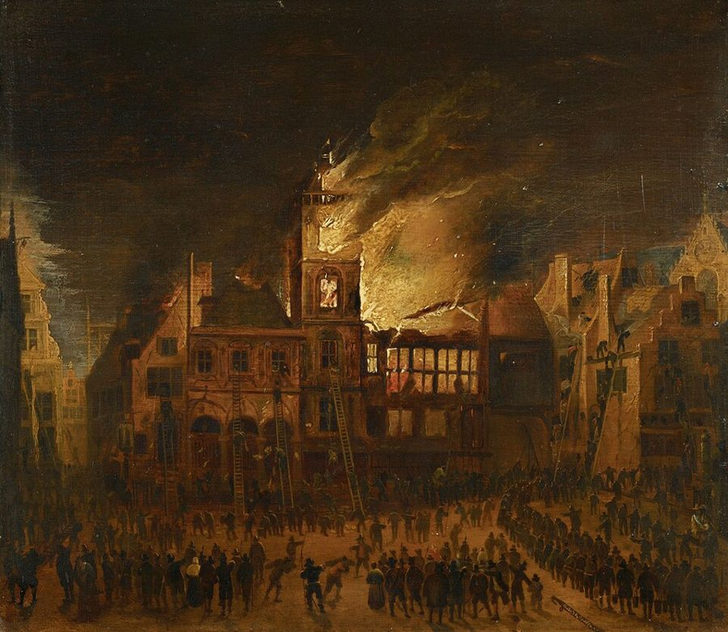
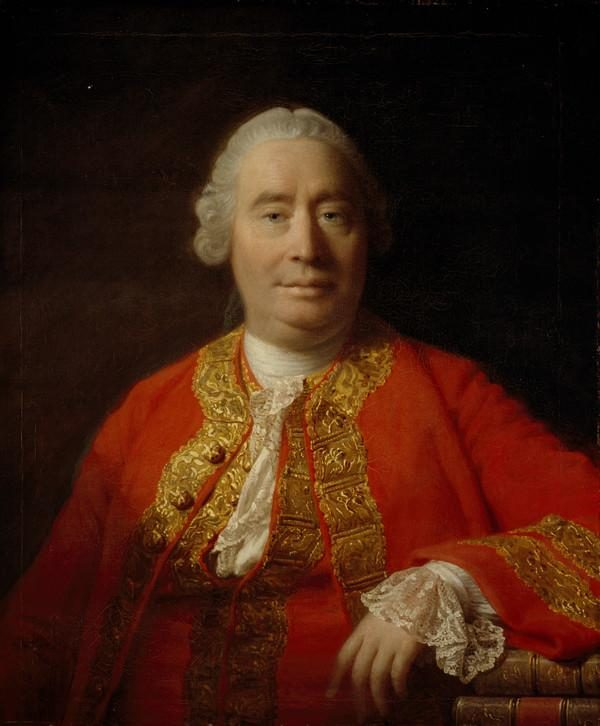

这一页在做什么
重商主义的第二招：对「贸易差额被认为不利」的国家，几乎什么货都设限。在 18 世纪的英国，这个国家就是法国。斯密说，上一章的限制出于私利，这一章的出于民族偏见和仇恨，所以更没道理。他分两步驳：先退一步，就按重商主义自己的规矩算；再亮出自己的立场。中间插进一段阿姆斯特丹银行的题外话。读的时候抓两条线：贸易为什么不是你赚我赔；邻国富了，是威胁还是好主顾。

他想证明什么
这一章短，论点也简单：拿贸易差额当输赢的记分牌是错的，自愿的贸易对两边都有好处。难读在于它分两层，读的时候别混。第 2–11 段是「退一步」：就算接受重商主义的原则，专门卡法国货也说不通，对法国逆差不等于总逆差，法国货还能转卖出去赚回金银，何况两国之间的差额根本算不准。这三条是斯密顺着对手的逻辑说的，不是他自己的主张。讲汇率算不准时，他岔出去讲了阿姆斯特丹银行，一讲就是十几段。第 30 段起是第二层，斯密换回自己的立场：整套差额学说荒谬透顶；把小店主的心眼当成国策，教各国盼着邻居变穷；富邻居其实是好主顾；决定一国兴衰的是生产和消费的差额。
读法：§6 是先读，一千七百词，全书最痛快的几段之一。有空再读 §5 和 §4 的市长故事；§2、§3 的汇率和银行细账可以跳过。
第 2–11 段是斯密顺着重商主义的逻辑推，「法国货转卖能赚回金银」不是他的主张。他自己的话从第 30 段开始。
斯密落在哪：不靠强迫、自然进行的贸易，总是对两边都有利，只是不一定同样有利；商业本该是各国之间的纽带，重商主义的格言却让它成了仇恨的根源。富邻居在贸易上是好事，一国的兴衰看的是生产和消费的差额，不是贸易差额。
分节地图
这一页是卷四第 3 章，本站切成 7 节。粗体是本站起的节名；「杨译里找」后面是杨译里这一节开头附近的小标题或第一句；灰色的英文是原文这一节开头的几个词。标「先读」的是最短读法。
- 对法国货的七成五关税大不列颠限制法国货物进口是一个例子TO lay extraordinary restraints upon the importation …英国对法国货层层加税，最后走私者成了主要的进口商。第 1 段大半是 1784 年第三版补写的。第 2–3 段起是「退一步」的论证。
- 海关账册和汇率都不可靠（3）贸易差额不能准确判断Thirdly, and lastly, there is no certain …海关估价过时，汇率又被磨损的铸币、铸币费、银行升水搅乱，差额根本算不准。技术细节多，结论一句话就够，可以跳过。
- 阿姆斯特丹银行的银行货币有关存款银行，特别是阿姆斯特丹存款银行的离题论述THE currency of a great state, such …小国的杂币为什么要靠银行「统一成色」，收据、保管费、升水怎么买卖。只看第 15–16 段的大意就够，其余是细账，可以跳过。
- 市长们宣誓守金库银行应承不将存款的任何部分贷出The bank of Amsterdam professes to lend …银行说一个盾也不贷出去，四位市长每年宣誓交接金库；1672 年挤兑时搬出的钱币还带着焦痕。这个故事的结局在书外，见「故事和背景」。
- 贸易差额说荒谬透顶第二部分 论按照其他原则，这种特别限制的不合理IN the foregoing Part of this Chapter …第 30 段是全章的论点：自愿贸易对双方都有利。第 32–35 段算谁得利多，靠的是页 13 的资本周转论，今天不这样算；第 35 段说用金子付账不比用烟草亏。
- 小店主的伎俩和富邻居反对法国葡萄酒的论据都是逻辑上不健全的It is a losing trade, it is …酒便宜的地方人反而清醒（今天的证据不支持）；把小店主的心眼当国策；商业成了仇恨之源；富邻居是好主顾。第 37、39 段是名段。
- 法国本该是最好的主顾对法国的贸易如果不加以限制，就会比对美洲的贸易对大不列颠更为有利It is in consequence of these maxims …英法因为是邻居就成了仇人；第 43–45 段讲「生产和消费的差额」。第 46–49 段是漏进正文的印厂名和一条脚注的残片，不是斯密的话。
先用中文过一遍：这一页的概念
这一页用到的两个概念。讲的是概念本身；每块的「今天」说今天怎么看它。贸易差额、汇价见页 16，贩运贸易和资本周转的座次见页 13。
§5贸易对双方都有利 always advantageous, though not always equally so, to both
你去面包店买面包，面包师得了钱，你得了面包，两个人都觉得划算，不然这笔买卖做不成。自愿的交换不是你赢我输，而是两边都比交换前好。斯密在第 30 段把这个道理搬到国与国之间：不靠强迫、自然进行的贸易，总是对双方都有利，只是不一定同样有利。他还先说清什么叫「好处」（第 31 段）：不是金银多了，而是一国每年的产物换得到的东西多了，居民的收入多了。按这个标准，顺差不是赚，逆差也不是赔。别和「双方得利一样多」混在一起：斯密明说可以不一样多。他也只说自愿的贸易，靠奖金和垄断硬撑出来的贸易，他说常常对本国不利。
今天：「贸易不是零和」是国际贸易理论的出发点。得利从哪来，今天用比较优势解释（页 17）。今天还要补一句斯密少谈的：一国整体得利，国内仍有人受损。
在这一页：第 30–31 段立论；第 32–35 段算谁得利多，那套算法过时了；第 39 段推到「富邻居是好主顾」。
§3银行货币和升水 bank money; agio
17 世纪的阿姆斯特丹，街上流通的是各国来的杂币，磨损的、剪边的都有，一枚钱到底含多少银子说不准。1609 年市里办了一家银行：你把钱币存进去，它按实际含银量折算，在账上记一笔足值的「盾」，这就是银行货币。账上的钱有几样好处：成色有保证，不怕火灾和盗贼，转账不用点钱、不用搬运，城市作担保；法律还规定大额汇票必须用它付。所以账上的一盾比街上的一盾值钱，多出来的那一截叫 agio，升水，平时约 4%–5%。杨译把它译作「扣头」，见「译本勘误」。银行宣称自己一个盾也不贷出去，账上有多少，金库里就有多少。
今天：账上的钱可以比现钞更值钱，今天的存款货币和央行准备金也是记账的钱。经济学家 Frost、Shin、Wierts 2020 年把这家银行比作一种早期的「稳定币」。
在这一页：第 11 段说汇率被它搅乱，第 15–16 段讲它怎么来；第 26 段说它不贷款，这句话的结局见「故事和背景」。
故事和背景
这一页里的故事和 18 世纪的东西，按在书里出现的顺序排。
§1七成五的关税和走私者
第 1 段斯密开了一张账单：1692 年对一切法国货加征 25% 的从价税（酒、白兰地、盐、醋另有重税），别国的货多半不超过 5%；1696 年嫌不够，又加一个 25%，葡萄酒另按桶计税；再算上五道普通的补助税（subsidy，这里是一种关税，不是补贴）。合起来，在这场战争开始以前，大部分法国货至少要交 75%，等于禁止进口。他相信法国对英国货也一样狠。结果是两国之间几乎没有正当的买卖，走私者成了主要的进口商。英国人喝的法国酒，有一部分是从荷兰偷运进来的。这一段除第一句外，几乎全是斯密 1784 年第三版补写的，所以「这场战争」多半指法国参战后的美国独立战争，不是 1776 年的事。
§4市长的誓言和带焦痕的钱币
第 26 段斯密先提了一个疑问：收据早已过期、平时没人来取的那部分存款，银行是不是也一盾不少地留着，「也许」就不那么确定了。然后他讲阿姆斯特丹人的回答：四位当值的市长每年一换，新上任的要去金库，对着账簿清点，宣誓接收，再同样庄严地交给下一届；城里党派斗来斗去，胜利的一方从没指控过前任在银行上不忠，要是有把柄，早就抖出来了。最好的证据是 1672 年：法王的军队打到乌得勒支，存户挤兑，银行照付不误，搬出来的钱币还带着建行后不久市政厅那场火的焦痕。故事出自伏尔泰（Cannan 注）。有一处对不上：那场火是 1652 年，离建行已有四十多年，算不上「不久」。
§4誓言管不住的账
斯密写书时，这家银行其实早已破了自己的规矩。研究者根据它的账目发现，银行一直违反章程，不声不响地贷款给荷兰东印度公司，账目对外保密；市里还年年从它那里拿走利润。Quinn 和 Roberds 2016 年估算，到 1784 年，也就是第三版出版那年，银行照它的做法已经资不抵债。1780 年代的战争和危机里存户一再挤兑，升水在 1790 年 10 月第一次跌成负数。1795 年法国革命军进入荷兰，新政府下令公开账目，升水跌到将近负 30%。银行苟延残喘到 1820 年才关门。宣誓保证不了储备，审计和公开的账才能。
§6休谟为法国祈祷

第 39 段「富邻居是好主顾」，斯密的朋友 David Hume 已经说过。他在 1758 年收进文集的《论贸易的猜忌》里说，一国的商业繁荣不会损害邻国，反倒会促进它们；文章最后一句：「不只作为一个人，也作为一个英国臣民，我祈求德意志、西班牙、意大利乃至法国本身商业繁荣。」那正是七年战争打得最凶的时候。斯密这一章最后几段（第 40–41 段，第三版补写）说，英法本该是彼此最好的主顾，却因为是邻居就成了仇人。第三版出版两年后，1786 年，英法签了《伊登条约》，互相降低关税，英国把法国葡萄酒的税降到和葡萄牙酒一样。主持此事的首相 Pitt 通常被认为受了斯密的影响。1793 年两国再开战，条约作废。
原典：斯密的原话
这本书是公版书，下面整段放斯密的原文，配本站的白话译。灰字说它在杨译的哪里，最后一行是这段里今天容易读错的 18 世纪词。
§5两边都有好处，只是不一定一样多
第 30 段全段和第 31 段，斯密换回自己立场的地方。在杨译整个的贸易差额学说是荒谬的这个小标题下面。
Nothing, however, can be more absurd than this whole doctrine of the balance of trade, upon which, not only these restraints, but almost all the other regulations of commerce are founded. When two places trade with one another, this doctrine supposes that, if the balance be even, neither of them either loses or gains; but if it leans in any degree to one side, that one of them loses, and the other gains in proportion to its declension from the exact equilibrium. Both suppositions are false. A trade which is forced by means of bounties and monopolies, may be, and commonly is disadvantageous to the country in whose favour it is meant to be established, as I shall endeavour to shew hereafter. But that trade which, without force or constraint, is naturally and regularly carried on between any two places, is always advantageous, though not always equally so, to both. By advantage or gain, I understand, not the increase of the quantity of gold and silver, but that of the exchangeable value of the annual produce of the land and labour of the country, or the increase of the annual revenue of its inhabitants.
本站译：可是，再没有比这整套贸易差额学说更荒唐的了，而不只这些限制，几乎所有别的商业管制都以它为根据。照这套学说，两地做买卖，差额持平，就谁也不赔不赚；差额只要往一边偏一点，就是一方亏、一方赚，亏赚多少，看它离正好平衡偏了多远。这两个假定都是错的。靠奖金和垄断硬撑起来的贸易，可能、而且通常对本想扶持它的那个国家不利，这一点我后面会设法说明。可是两地之间不靠强迫、不受限制、自然而然经常进行的贸易，总是对双方都有利，只是不一定同样有利。我说的好处或利得，不是指金银多了，而是指一国每年从土地和劳动得来的产物，按交换价值算多了，也就是这国居民每年的收入多了。
常被简化成「自由贸易对谁都同样好」。斯密留了两道限定：只说不靠强迫的贸易，而且得利不一定一样多。接下来第 33–34 段说出口本国货的一方得利更多，那是页 13 的资本周转算法，今天不成立。
- balance差额；even balance 是进出口持平
- declension偏离、倾斜，不是语法上的「变格」
- revenue居民的收入，不是国家的税收
§6小店主的伎俩成了大帝国的国策
第 36 段末尾和第 37 段全段，全书骂商人骂得最狠的段落之一。前面一句说葡萄牙人比法国人更照顾英国货。在杨译次等商人的小伎俩变成了政治原则，商业变成了争论而不是和谐的根源这个小标题前后。
… As they give us their custom, it is pretended, we should give them ours. The sneaking arts of underling tradesmen are thus erected into political maxims for the conduct of a great empire … By such maxims as these, however, nations have been taught that their interest consisted in beggaring all their neighbours. Each nation has been made to look with an invidious eye upon the prosperity of all the nations with which it trades, and to consider their gain as its own loss. Commerce, which ought naturally to be, among nations, as among individuals, a bond of union and friendship, has become the most fertile source of discord and animosity. The capricious ambition of kings and ministers has not, during the present and the preceding century, been more fatal to the repose of Europe, than the impertinent jealousy of merchants and manufacturers. The violence and injustice of the rulers of mankind is an ancient evil, for which, I am afraid, the nature of human affairs can scarce admit of a remedy. But the mean rapacity, the monopolizing spirit of merchants and manufacturers, who neither are, nor ought to be, the rulers of mankind, though it cannot perhaps be corrected, may very easily be prevented from disturbing the tranquillity of any body but themselves.
本站译：……人家照顾我们的生意，据说我们也该照顾人家的生意。小本生意人鬼鬼祟祟的那一套，就这样被抬成了一个大帝国的施政方针……可是，靠这一类格言，各国被教会了：自己的利益在于让所有邻国都变穷。每个国家都被教得眼红所有贸易伙伴的繁荣，把人家的得利当成自己的损失。商业在国与国之间，本该像在人与人之间一样，是团结和友谊的纽带，如今却成了纷争和仇恨最多产的源头。在这个世纪和上个世纪，国王和大臣们反复无常的野心，对欧洲安宁的祸害，并不比商人和制造业者无理的猜忌更大。统治人类的人的暴虐和不义，是一种古老的祸害，我怕人间事务的本性几乎容不下补救。可是商人和制造业者那种卑鄙的贪婪、那种垄断的精神，他们既不是、也不应当是人类的统治者，这种精神也许改不掉，却很容易防住，让它除了扰乱他们自己，扰乱不了任何人的安宁。
省略处一句：只有最小的店主才定规矩专买自己主顾的货，大商人总是哪里又好又便宜就在哪里进货。最后一句常被单独引用；注意斯密的药方很温和：不是改造商人，而是别让他们来定国策。
- underling tradesmen小本生意人、下等店主
- custom光顾、生意；give us their custom 是照顾我们的生意
- jealousy猜忌、怕别人占先，18 世纪讲贸易的固定说法，不只是「嫉妒」
- impertinent不相干的、无理的，不是「无礼」
§6富邻居是好主顾
第 39 段的前半和中间一句。在杨译富有的邻人对国家也像对个人一样，是一种有利条件这个小标题下面。
The wealth of a neighbouring nation, however, though dangerous in war and politics, is certainly advantageous in trade. In a state of hostility it may enable our enemies to maintain fleets and armies superior to our own; but in a state of peace and commerce it must likewise enable them to exchange with us to a greater value, and to afford a better market, either for the immediate produce of our own industry, or for whatever is purchased with that produce. As a rich man is likely to be a better customer to the industrious people in his neighbourhood, than a poor, so is likewise a rich nation. … Private people who want to make a fortune, never think of retiring to the remote and poor provinces of the country, but resort either to the capital, or to some of the great commercial towns. They know, that, where little wealth circulates, there is little to be got, but that where a great deal is in motion, some share of it may fall to them. … A nation that would enrich itself by foreign trade, is certainly most likely to do so when its neighbours are all rich, industrious, and commercial nations.
本站译：不过，邻国的财富，在战争和政治上虽然危险，在贸易上却肯定有利。打仗的时候，它也许能让敌人养起比我们更强的舰队和军队；可是在和平通商的时候，它同样能让邻国跟我们交换更多东西，给我们的产品，或者用我们产品换来的东西，提供更好的市场。对街坊里勤劳的人来说，富人通常是比穷人更好的主顾，富国也是这样。……想发财的人，从来不会想着退到国内偏远贫穷的地方去，而是奔首都，或者奔某个大商业城市。他们知道，钱流动少的地方，没什么可挣的；钱大把流动的地方，总有一份会落到自己头上。……一个想靠对外贸易致富的国家，邻国都是富裕、勤劳、善于经商的国家时，肯定最有可能如愿。
注意第一句的让步：斯密没说富邻居毫无危险，他把「战争和政治」与「贸易」分开算账。省略处他还承认，富人自己若也开厂，对同行是危险的邻居，但这种竞争对大多数人有利。
- industry劳动、产业，不是今天狭义的「工业」
- commercial善于经商的、商业发达的
译本勘误
杨译这一章整体可靠。下面只收会把人读歪的一处。灰字是英文原文那一处的几个词；方框里是杨译的原句，在电子书里搜它。
§3agio 是升水，不是折扣术语
to have borne an agio
译本：「它似乎一开头就带有一个扣头」
agio 指银行货币比街上现钱多值的那一截，是溢价。今天说「扣头」，多半指打折或回扣，读者会以为银行货币比现钱便宜，正好反了。杨译在第 11 段头一次出现时注了「［或贴水］」，后文却一律写「扣头」；读到 §3、§4 时，心里把它换成「升水」。
今天怎么看
这一章的主要说法和今天的判断。每条标签判的是那条论点，五种标签的意思：
- 成立今天的经济学和证据支持这句话。
- 部分成立大方向对，细节或适用范围要改。
- 过时说的是 18 世纪的世界，当时也许对，今天的制度和技术已经变了。
- 被推翻后来的经济学或证据说明它错了。
- 有争议经济学界至今没有定论，两边各有代表性的研究。
不靠强迫的贸易，总是对双方都有利，只是不一定同样有利
好处按一国的年产物和居民收入算，不按金银算。今天看，这是国际贸易理论的出发点；一国总的逆差主要反映储蓄少于投资，不等于吃亏，见页 16 的贸易差额。要补的是：国家整体得利，国内被进口挤掉饭碗的人照样受损。
§5 第 30–31 段出口本国货的一方得利更多，直接贸易胜过迂回贸易
斯密的理由是：本国货的那份资本全在本国分配，养活更多本国人。今天看，这是页 13 那套按「补偿几份本国资本」排座次的算法，已经不算数：一国的得失看换来的东西值多少，不看雇了多少本国人。
§5 第 32–35 段酒便宜似乎反而让人清醒，取消酒税后的一时狂饮会换来长久的节制
斯密拿西班牙、意大利、法国南部作证，还顺手把北方民族和「几内亚海岸的黑人」列为嗜酒的例子，这是当时欧洲人的成见，他没有给依据。今天看，价格和饮酒量的关系很清楚：酒越便宜，喝得越多，伤害越大，见下面的对照卡。
§6 第 36 段书里的说法：取消酒税会引起一阵普遍的狂饮，但不久就会换来长久、几乎普遍的节制
- 书里
- 第 36 段。斯密说酒便宜「似乎」是节制而不是醉酒的原因，证据是产酒国的人最清醒，北方调到南方的法国兵几个月后就喝得和当地人一样少。
- 当时
- 英国对法国酒征重税，也对麦芽和啤酒征货物税。斯密要驳的是「工人进酒馆是亏本买卖，所以要限制」。
- 今天
- Wagenaar 等人 2009 年汇总 112 项研究：酒价和酒税越高，饮酒量越低，对重度饮酒者也有效。芬兰 2004 年把酒税平均降了约三分之一，很接近斯密设想的那种试验；研究者发现，此后两年男性的酒精相关死亡增加约 16%，女性约 31%，并没有换来节制。南欧人少醉酒，今天多归于饮酒习惯（随餐喝），和价格是两回事。核对于 2026-10。依据：Wagenaar, Salois & Komro, Addiction, 2009；Herttua, Mäkelä & Martikainen, American Journal of Epidemiology, 2008。
邻国富了，是威胁还是好主顾
主流看法：经济学这一边站在斯密和 Hume 一边：两国贸易量大致跟双方的经济规模成正比、跟距离成反比（Tinbergen 1962 年提出的「引力模型」，至今是贸易研究的主力工具），邻国越富，市场越大。国际关系学的「现实主义」一派则强调相对得失：Grieco 1988 年指出，国家担心伙伴从合作中得利更多，就会限制合作。今天围绕贸易战和「经济安全」的争论，两种算法都在场。
斯密的看法：第 39 段把账分开算：邻国的财富在战争和政治上危险，在贸易上肯定有利；第 41 段说英法因为是邻居，就「必然」成了仇人，商人的猜忌和民族仇恨互相火上浇油。
本站的评论：斯密没有天真到说富邻居毫无威胁，他承认富国能养更强的舰队，也在页 17 说国防比富裕重要。他反对的是把贸易也算成战争：人家多赚一分就是我少赚一分。真正的安全顾虑是窄而具体的，像他当年只举了航海法一例；拿它给一切关税撑腰，就落进了他骂的「小店主的伎俩」。
本站的总体看法：值得读 §6 和 §5 的第 30 段：「贸易对双方都有利」「商业本该是纽带」今天仍是常识，说得也最痛快。谁得利多的算法、酒便宜让人清醒，可以当 18 世纪的推理看。阿姆斯特丹银行那段，读市长的故事，再记住它的结局。
精彩回顾
隔几周回来时看这里。想不起来，点节号回到那一节。
一句话：自愿的贸易两边都有好处；盼着邻居变穷的，是小店主的心眼。
1672 年挤兑，阿姆斯特丹银行搬出的钱币带着市政厅大火的焦痕，斯密拿它证明银行守信。可银行早在偷偷放贷，1795 年账目一公开，信誉就塌了。
§4不靠强迫的贸易总是对双方都有利，只是不一定同样有利。好处按收入算，不按金银算。
§5想发财的人往首都跑，不往穷乡僻壤跑；国家也一样，邻国越富，生意越好做。Hume 为法国的繁荣祈祷，斯密接着说。
§6